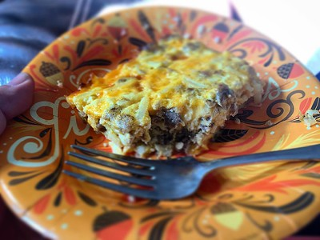

Home
Make Ahead Breakfast Casserole

Description
Mmm mmm good! This is a must do for every holiday in my
household, or just when you have guests overnight! Can be
made with egg substitute, skim milk and turkey sausage to
make it healthier!
Ingredients
- 21⁄2 cups seasoned croutons
- 1 pound spicy pork sausage
- 4 eggs
- 21⁄4 cups milk
- 1 (10.75 ounce) can condensed cream of mushroom soup
- 1 (10 ounce package) package frozen chopped spinach
- thawed, drained and squeezed dry
- 1 (4.5 ounce) can be mushrooms, drained and chopped
- 1 cup shredded sharp Cheddar cheese
- 1 cup shredded Monterey Jack cheese
- 1⁄4 teaspoon dry mustard
- 2 sprigs fresh parsley, for garnish
Steps
- Spread croutons on bottom of greased 9x13 inch baking
dish. Crumble sausage into medium skillet. Cook over
medium heat until browned, stirring occasionally. Drain
off any drippings. Spread sausage over croutons.
- In a large bowl, whisk together eggs and milk until
well blended. Stir in soup, spinach, mushrooms, cheeses
and mustard. Pour egg mixture over sausage and croutons.
Refrigerate overnight.
- The next morning, preheat oven to 325 degrees F (165
degrees C).
- Bake in a preheated oven for 50 to 55 minutes or until
set and lightly browned on top. Garnish with parsley
sprigs and serve hot.